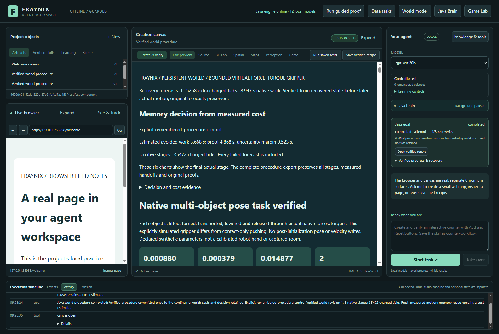
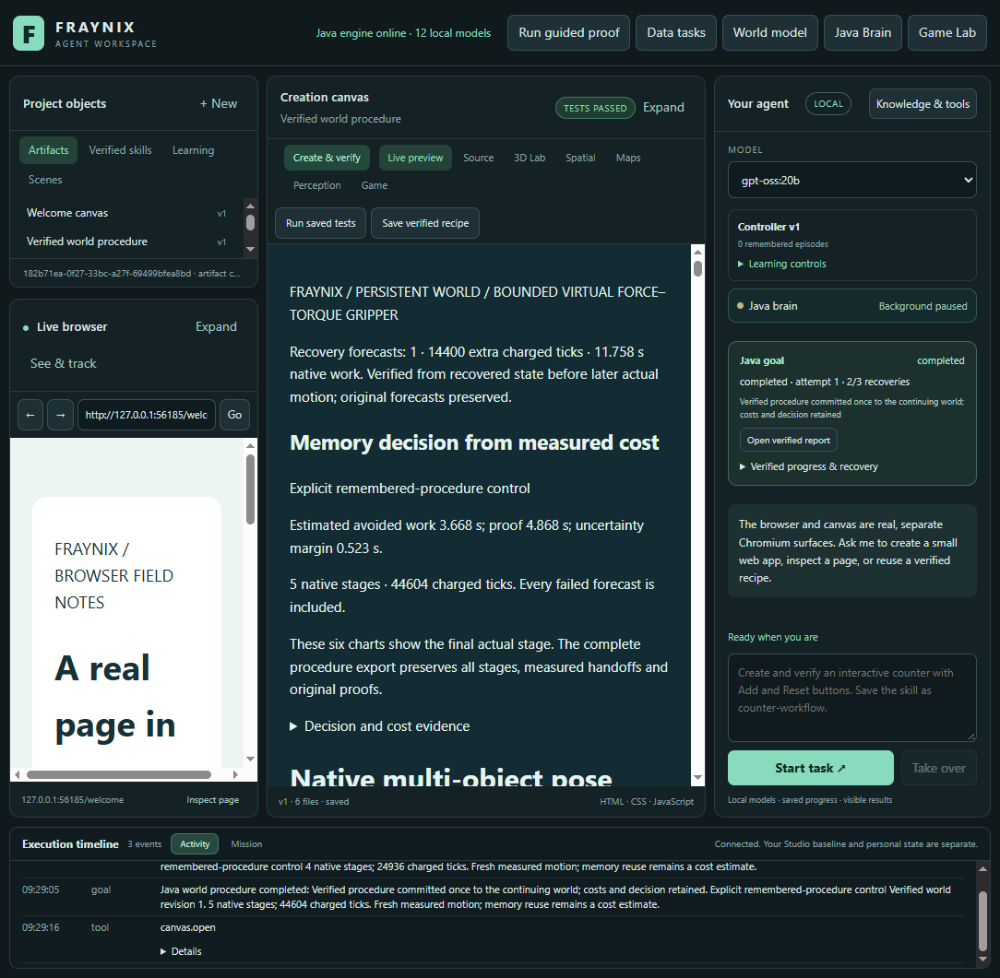

Recover the world.
Renew the prediction.
Original Java / native physics evidence from labelled synthetic scenes. Offline inspection; no new simulation or model inference.
A new forecast before continuation
Finish the owned actual stage from its native checkpoint.
Derive the next frame from verified motion. Preserve the old forecast.
Reserve work and run a distinct forecast. Verify its exact source and outcome.
Run a separate actual stage. Compare, audit and commit once.
Two explicit resumes, 115,200 charged ticks, 20 minutes of active goal time and 90 seconds per attempt remain the limits. A new prediction never substitutes for actual motion. The audit checks original hashes, provenance, state, action plan, protected bodies, chronology, native outcome and cost.
What was refused
Altered binding references, frame/plan hashes, chronology, budget charges, waypoint and outcome fields were rejected. Same-size native-file corruption was refused even with its timestamp preserved. Exact restoration restored verification. Stopping during forecasting prevented the next actual stage and any world commit.
Actual test outcomes
One fresh retained procedure, then an uninterrupted baseline, two early-restart conditions, a second interruption during forecasting and a stop during forecasting. Two assigned logical processors and 512 MiB Java heap; no LLM calls.
| Case | Result | Caller time | Charged ticks | New forecast time |
|---|
Caller time includes controlled restart and evidence-reading overhead. Native forecasting time is recorded separately. Unknown interruption tails are conservatively charged the full attempt bound. Resumed totalMillis=0 means unavailable and excluded from calibration.
These are controlled app closures and nearby two-stage synthetic cases, not abrupt power failure, three-stage native recovery or hardware accuracy validation. There is no claim of general intelligence or trained LLM weights.
Inspect the original samples
X/Z projection of retained body positions. Original forecasts, recovered forecasts and actual runs have separate identities. No interpolation, regenerated path or full 3D rotation rendering.
The actual integrated application
Captured 2026-11-08 after fresh verified tasks. Existing chat, world controls and saved reports remain together. Requested window sizes 1600×1100 and 1100×1100; captured client areas 1584×1061 and 1084×1061.


Next evidence
Test native three-stage recovery and abrupt termination, then measure total recovery cost on longer mixed tasks. Keep uninterrupted and simple-control comparators, complete timing and original source/outcome gates.
Verification results · Original archive · Source inventory · Prospective contract